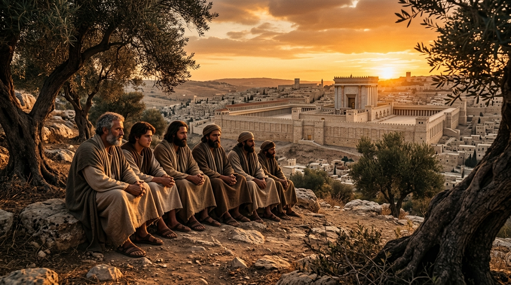

O Monte das Oliveiras: O Discurso de Jesus sobre o Fim dos Tempos
Nos últimos dias de Seu ministério terreno, pouco antes da Paixão, Jesus retirou-se com Seus discípulos para o Monte das Oliveiras. Ali, em um diálogo íntimo mas de peso escatológico imensurável, Ele proferiu o que hoje conhecemos como o "Sermão Profético" (registrado de forma mais detalhada em Mateus 24, com paralelos em Marcos 13 e Lucas 21). Respondendo às inquietantes perguntas dos discípulos sobre a destruição do Templo e o sinal da Sua vinda e do fim do século, o Senhor Jesus delineou um panorama que abrange tanto os eventos históricos imediatos daquela geração quanto a culminância apocalíptica da história humana.
Este discurso é o pilar central da escatologia neotestamentária. Nele, Cristo não oferece uma cronologia linear simples, mas um conjunto de sinais e padrões que iriam se repetir ao longo da história da Igreja, servindo como advertências contra o engano, a apostasia e a complacência. Este estudo examina o conteúdo desse sermão, diferenciando o que se cumpriu na catástrofe de Jerusalém em 70 d.C. e o que ainda aguarda o seu cumprimento derradeiro na parusia.
Índice do Estudo:
- 1. A Pergunta dos Discípulos e o Perigo do Engano
- 2. O Princípio das Dores: Guerras, Fomes e Pestes
- 3. A Abominação da Desolação e a Grande Tribulação
- 4. O Sinal do Filho do Homem e a Expectativa da Parusia
- 5. O Chamado à Vigilância: A Parábola da Figueira
- 6. Tabela Analítica e Aplicação Prática do Sermão Profético
1. A Pergunta dos Discípulos e o Perigo do Engano
O Sermão Profético inicia-se com uma advertência urgente e repetida: "Acautelai-vos, que ninguém vos engane" (Mateus 24:4). Os discípulos, maravilhados com a grandiosidade arquitetônica do Templo de Jerusalém, foram tomados de sobressalto pela profecia de Jesus de que não ficaria pedra sobre pedra. A pergunta feita por eles — "que sinal haverá da tua vinda e do fim do século?" — reflete a ansiedade natural de quem busca segurança em estruturas visíveis. Jesus, contudo, redireciona o foco deles do Templo físico para a realidade espiritual do Seu Reino.
O primeiro sinal, segundo o próprio Mestre, é a proliferação de falsos cristos e falsos profetas. Em um mundo inclinado a buscar salvadores políticos e soluções mágicas para dilemas existenciais, Jesus alerta que a característica do fim dos tempos é a confusão espiritual generalizada. O cristão, portanto, deve manter a vigilância intelectual e espiritual para não se deixar seduzir por discursos messiânicos que prometem a paz fora dos termos do Evangelho.
2. O Princípio das Dores: Guerras, Fomes e Pestes
Jesus descreve um cenário de instabilidade geopolítica e climática — guerras, rumores de guerras, fomes e terremotos — como o "princípio das dores". A metáfora das dores de parto é essencial: o mundo não está simplesmente caminhando para um fim aleatório, mas para um nascimento. Assim como as dores de parto aumentam em frequência e intensidade, os eventos desestabilizadores que assombram a história humana são sinais de que a criação geme, aguardando a manifestação dos filhos de Deus.
É vital notar que Jesus enfatiza que o fim não é imediato logo após esses eventos. O período entre a primeira vinda de Cristo e o Seu retorno é marcado por essa tensão contínua. O crente não deve ser paralisado pelo medo diante das notícias globais; pelo contrário, deve compreender essas turbulências como confirmações da soberania divina e do avanço inexorável do plano de Deus.
3. A Abominação da Desolação e a Grande Tribulação
No centro do sermão, Jesus faz menção à "abominação da desolação" de que falou o profeta Daniel, um evento que sinalizaria um momento de crise sem precedentes para o povo judeu. Historicamente, isso encontrou um cumprimento trágico com a invasão romana e a profanação do Templo em 70 d.C., mas a linguagem apocalíptica utilizada por Cristo aponta também para um período de tribulação futura ainda mais severa.
A "Grande Tribulação" é descrita como um tempo de angústia tal que, se não fosse abreviado pelo Senhor, nenhuma carne se salvaria. Este período representa o ápice da rebelião humana contra Deus e a intensificação da perseguição contra aqueles que permanecem fiéis ao testemunho de Jesus. O consolo de Cristo, porém, é que mesmo no auge dessa desolação, o Seu olhar está sobre os Seus eleitos.
4. O Sinal do Filho do Homem e a Expectativa da Parusia
Ao contrário da primeira vinda, que foi discreta e humilde, a segunda vinda (Parusia) será um evento universal, inegável e glorioso. Jesus declara: "Como o relâmpago sai do oriente e se mostra até ao ocidente, assim será também a vinda do Filho do Homem" (Mateus 24:27). Não haverá necessidade de redes sociais ou comunicados oficiais para anunciar a vinda do Rei; a própria glória celestial será a evidência suprema.
O sinal do Filho do Homem no céu trará o lamento de todas as tribos da terra que, tendo rejeitado a graça, confrontar-se-ão com a realidade da Sua autoridade absoluta. Para os que esperam, contudo, este sinal é o ápice da redenção, o momento em que os eleitos serão reunidos dos quatro cantos do mundo.
5. O Chamado à Vigilância: A Parábola da Figueira
Concluindo o sermão, Jesus usa a metáfora da figueira. Quando os ramos ficam tenros e as folhas brotam, sabemos que o verão está próximo. De igual modo, quando virmos o cumprimento dos sinais, devemos saber que a vinda do Rei está às portas. Mas o ponto central não é a data, é a atitude. A ênfase é na **vigilância**. Viver em vigilância não significa viver em desespero apocalíptico, mas viver em obediência diária, como servos que esperam o retorno do mestre. A santidade é a melhor forma de se preparar para o fim.
6. Tabela Analítica e Aplicação Prática do Sermão Profético
| Sinal | Descrição de Jesus | Aplicação Espiritual |
|---|---|---|
| Engano | Proliferação de falsos cristos e profetas. | Conhecer a Palavra para discernir a verdade. |
| Princípio das Dores | Guerras, fomes e desastres globais. | Não se desesperar; Deus continua no controle. |
| Grande Tribulação | Tempo de angústia sem precedentes. | Perseverança na fé e fidelidade ao Mestre. |
💡 Aplicação Prática: O Chamado à Vigilância
O Sermão Profético de Jesus não nos foi dado para estimular a curiosidade inútil sobre datas ou para alimentar o medo, mas para ancorar a nossa esperança. Jesus sabia que o futuro traria desafios terríveis, por isso Ele nos deu as ferramentas para suportá-los: vigilância, oração e uma vida fundamentada na verdade. A maior proteção contra o engano é um coração apaixonado por Cristo.
Que possamos viver como aqueles que esperam ansiosamente pelo Seu retorno, não paralisados pelo medo, mas impulsionados pelo amor. Cada amanhecer é uma nova oportunidade de proclamar o Evangelho e viver de forma que, se Ele voltasse hoje, nos encontrasse fazendo exatamente o que Ele nos chamou para fazer: amar a Deus, amar ao próximo e perseverar na fé.
Navegação rápida:
- Voltar ⬅️ 4. As Visões de Daniel
- Próximo Estudo ➡️ 6. Apocalipse e o Fim
Apoie este projeto 🌱
Se este estudo foi útil, considere apoiar a manutenção do site.
Chave PIX (Celular):
marcosmontanaria@gmail.com